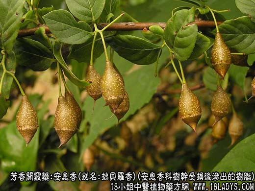
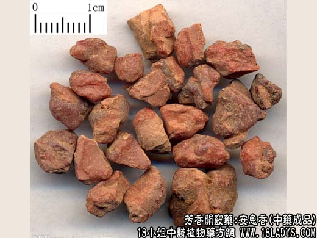
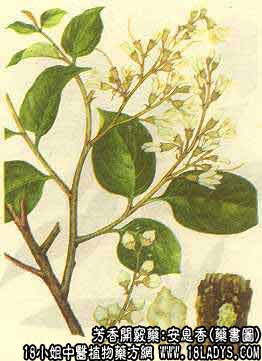

本品为少常用中药。始载《唐本草》。
来源：为安息香科植物落叶乔木安息香树之树干受损伤后渗出的树脂。多为进口。
产地：主产于印尼、泰国、越南、老挝等地，国内广西有产。
性状鉴别：本品呈不规则的小块片状，外表面橙黄色或红棕色，稍显粗糙。常温条件下，质略坚而松脆，易断碎。断面微有光泽，并嵌有乳白色树脂层，加热则软化。气芳香，味淡。以外色橙黄，内碴有乳白色夹层，气香浓，质纯净者为佳。
主要成分：我国出产的安息香含总香脂酸（全为苯甲酸）25%～31%。苏门答腊安息香主含树脂肪，商品之干燥醇浸出物含总香脂酸约26%～35%，其中大部分为桂皮酸。泰国安息香（商品）含总香酸酸约39%，其中绝大部分为苯甲酸。
功效与作用：芳香开窍，有兴奋中枢作用，并能行气血和祛痰。
炮制：研细粉，生用。
性味：辛、苦、平。
归经：入心、脾经。
功能：开窍，辟恶，散风，行血。
主治：中风昏厥，产后血晕，心腹诸痛。
临床应用：用于中枢兴奋，其作用大致与麝香、苏合香相同，且常同用。三香比较，三者都能兴奋中枢神经系统，治疗中风不省人事，但麝香兼有消肿祛痈作用，可治疗痈疽和跌打损伤，苏合香则以治中风痰厥为特长；安息香则兼能活气血，治心腹疼痛。
用量：1.5～3g，入丸散剂。
处方举例：安息香丸：安息香、沉香、丁香、木香、茴香各9g、砂仁、香附、甘草各15g，共研细末，炼蜜为丸，每服3g，紫苏汤松下，治小儿寒气腹痛屈脚而啼。
注：除上述商品外，过去尚进口一种压结成大块的安息香，外表黑褐色或灰褐色，并夹杂有白色斑块，香气较淡品质较次。另外还有一种水安息香，呈褐色液体样，用椭圆形小木罐包装，每罐重约30g，新中国成立后，已先后停止进口。广西地区发现有安息香树分布，并已试行生产。所产之安息香品质、形色、气味与上面所述完全相同。
以上为安息香的功效与作用，以及安息香图片，相信您已经对这味香药有所了解，查询更多中药的功效请关注中药大全。